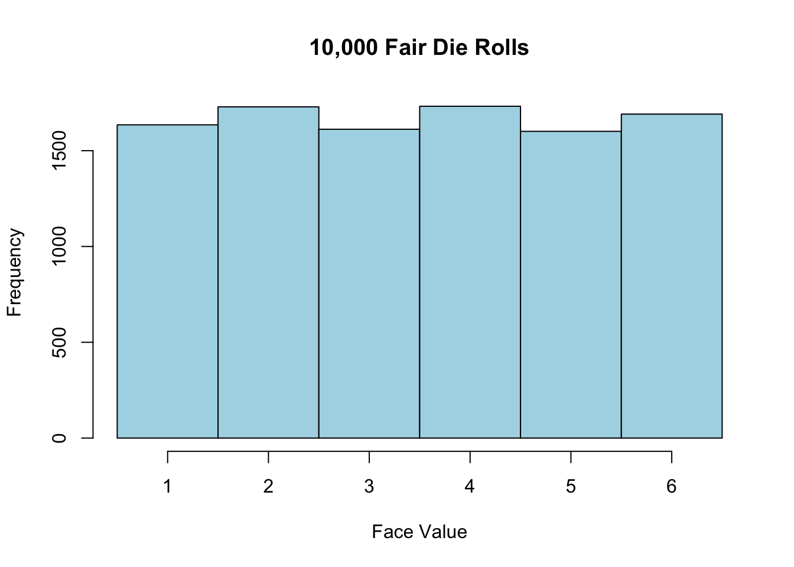
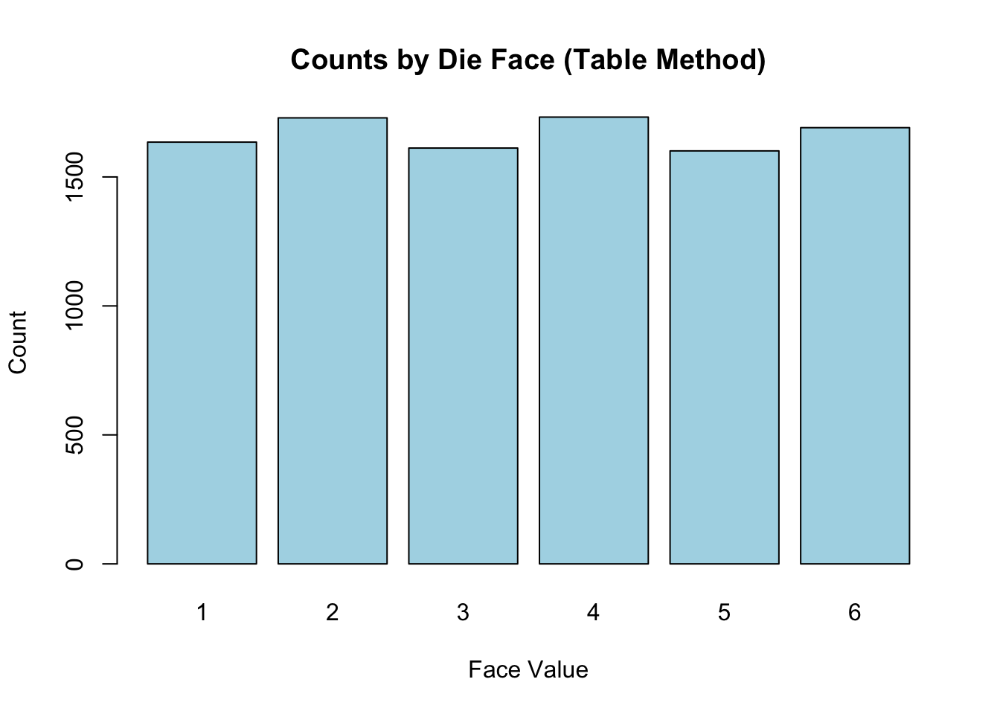
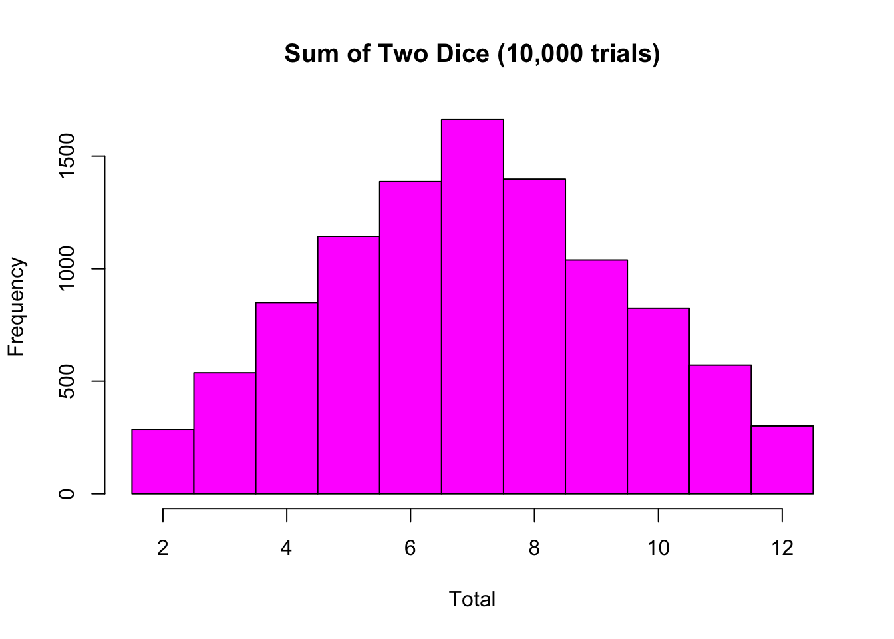
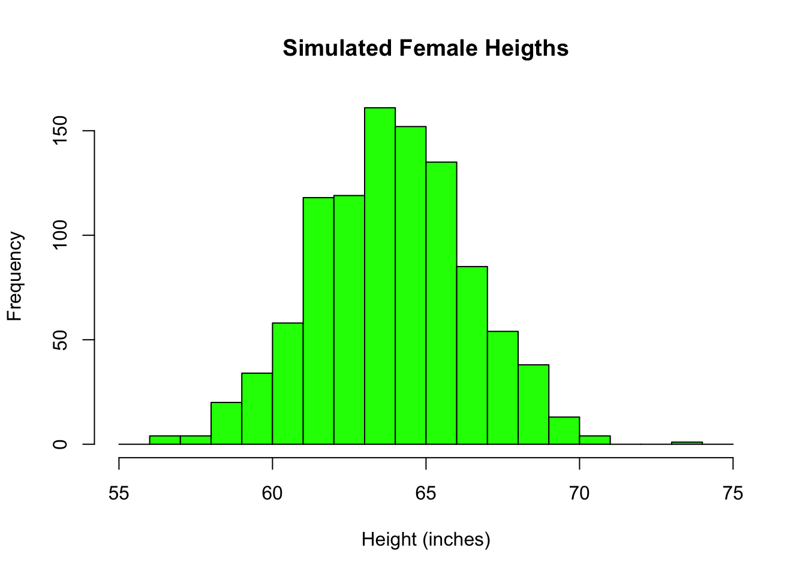
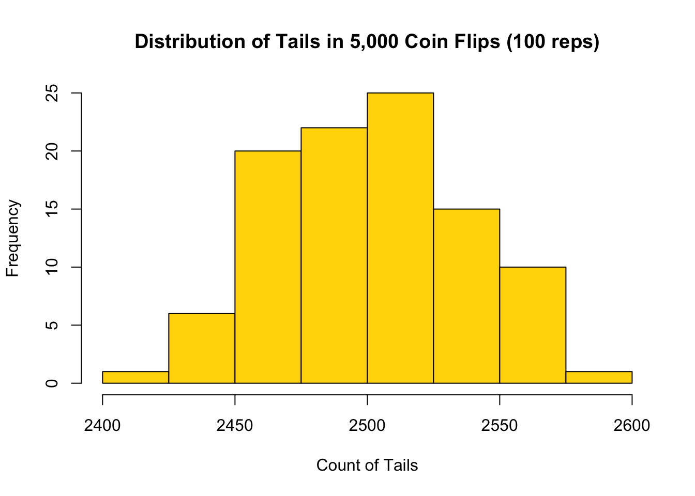
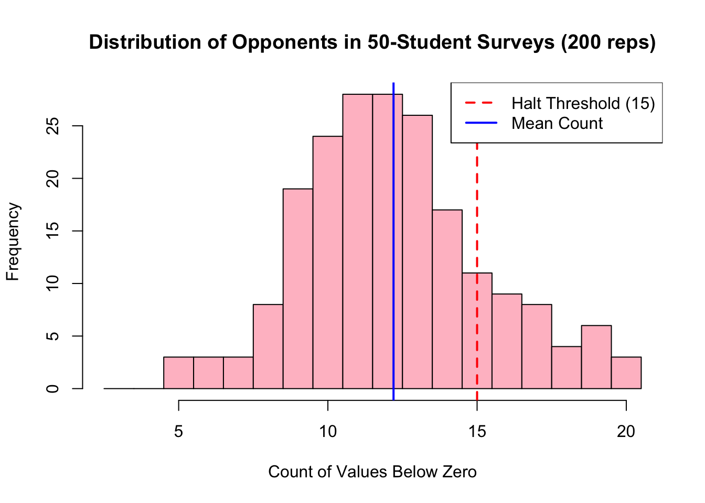
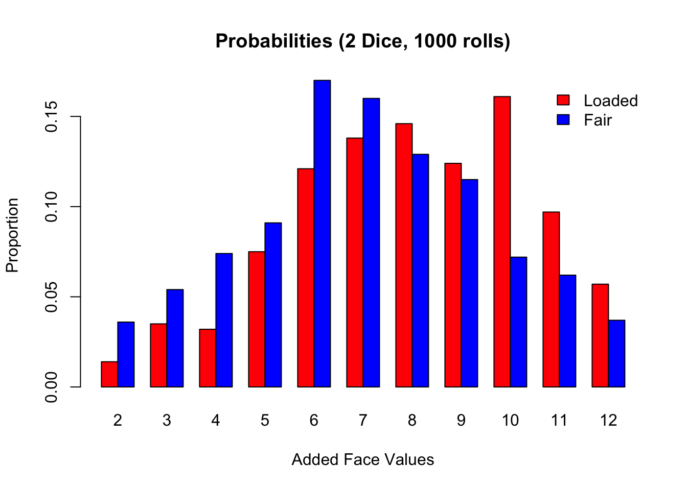

set.seed(2025)Chapter 15 Notes
Set Seed
set.seed helps to ensure reproducibility.
Coin Flips
Goal is to flip a coin 1,000 times. 0 = heads and 1 = tails
Sample Space: A collection or set of all possible outcomes in a random experiment.
Set Notation: (S) = {Head, Tail}
coins <- sample(x = 0:1, size = 1000, replace = TRUE)Replacement is essential whe simulating independent outcomes, like coin flips.
There will be about 500 tails
sum(coins)[1] 526There were 526 Tails in the coins vector.
Dice Rolls
Goal is to simulate 10,000 roles of a fair 6-sides die and plot the results
dice <- sample(1:6, 10000, replace = TRUE)Histograms
hist(dice,
breaks = seq(0.5, 6.5, by = 1),
col = "lightblue",
main = "10,000 Fair Die Rolls",
xlab = "Face Value")
Updates to the code centers the bars on the x-axis rather than in bins.
Can also do bar plots, probably better for this type of discrete data.
barplot(table(dice),
main = "Counts by Die Face (Table Method)",
col = "lightblue",
xlab = "Face Value",
ylab = "Count")
Two Die
IF I roll two die I would expect to see a normal distribution centered around 7.
sum_two <- sample(1:6, 10000, TRUE) + sample(1:6, 10000, TRUE)
hist(sum_two,
breaks = seq(1.5, 12.5, by = 1),
col = "magenta",
main = "Sum of Two Dice (10,000 trials)",
xlab = "Total")
Symmetric Data
Simulating the heights of 1,000 adult females using rnorm()
heights <- rnorm(n = 1000, mean = 64, sd = 2.5)hist(heights,
breaks = seq(55, 75, by = 1),
col = "green",
main = "Simulated Female Heigths",
xlab = "Height (inches)")
rnow will create slightly different data since it is sampling each time. The mean and sd may not match that of the parameters.
Repeating Simulation
tails_100 <- replicate(n = 100, expr = sum(sample(0:1, 5000, TRUE)))Will flip a coin 5000 tiles then repeats that 100 times using replicate().
summary(tails_100) Min. 1st Qu. Median Mean 3rd Qu. Max.
2420 2474 2501 2501 2528 2589 hist(tails_100,
breaks = seq(2400, 2600, by = 25),
col = "gold",
main = "Distribution of Tails in 5,000 Coin Flips (100 reps)",
xlab = "Count of Tails")
Normal Data with replicate()
Generate 50 random numbers, compare each to zero and then count how many are below zero
x <- rnorm(n = 50, mean = 2, sd = 3)
print(x) [1] 0.34269746 9.24325215 -6.77011726 1.72403800 5.08941992 -0.15169566
[7] 0.04400074 -1.07963620 2.39478577 -0.09349192 6.95550320 7.19297533
[13] -4.85248555 5.31078816 0.35255206 -0.72153798 6.34762147 3.81386047
[19] 0.52557708 1.53297448 1.53818279 1.94611294 4.55156099 0.45226924
[25] 4.64998608 -0.88082571 0.76710593 1.45456546 3.74626432 -0.51096457
[31] -0.20947662 1.16340235 4.98293894 2.66931952 4.28372271 -0.67493952
[37] 2.83432811 3.03011983 0.82827769 2.60447579 1.30955611 8.87118089
[43] -0.29685273 0.14609798 -1.41034637 8.37031242 5.34772025 -3.29414322
[49] 2.17823848 3.01779155below_zero <- x < 0
print(below_zero) [1] FALSE FALSE TRUE FALSE FALSE TRUE FALSE TRUE FALSE TRUE FALSE FALSE
[13] TRUE FALSE FALSE TRUE FALSE FALSE FALSE FALSE FALSE FALSE FALSE FALSE
[25] FALSE TRUE FALSE FALSE FALSE TRUE TRUE FALSE FALSE FALSE FALSE TRUE
[37] FALSE FALSE FALSE FALSE FALSE FALSE TRUE FALSE TRUE FALSE FALSE TRUE
[49] FALSE FALSEcount <- sum(below_zero)
print(count)[1] 13values_below_zero <- replicate(
n = 200,
expr = sum(rnorm(50, mean = 2, sd = 3) < 0)
)mean(values_below_zero)[1] 12.2sd(values_below_zero)[1] 3.099684quantile(values_below_zero, c(.1, .5, .9))10% 50% 90%
9 12 17 threshold <- 15
max_count <- max(values_below_zero)
breaks_int <- seq(2.5, max_count + 0.5, by = 1)
hist(values_below_zero,
breaks = breaks_int,
col = "pink",
main = "Distribution of Opponents in 50-Student Surveys (200 reps)",
xlab = "Count of Values Below Zero")
abline(v = threshold, col = "red", lwd = 2, lty = 2)
abline(v = mean(values_below_zero), col = "blue", lwd = 2, lty = 1)
legend("topright",
legen = c("Halt Threshold (15)", "Mean Count"),
col = c("red", "blue"),
lty = c(2, 1),
lwd = 2,
bg = "white",
bty = "o")
Fair-Dice Check
Simulate rolling a dice with biased probabilities
rolls <- sample(1:6, 1000, replace = TRUE, prob = c(.12, .13, .07, .23, .22, .23))round(prop.table(table(rolls)), 3)rolls
1 2 3 4 5 6
0.137 0.120 0.072 0.210 0.199 0.262 Fair vs. Unfair Dice
Simulate rolling two biased dice 1,000 times and compare to. two fair dice
set.seed(8000)
biased <- c(.12, .13, .07, .23, .22, .23)
friend_sum <- sample(1:6, size = 1000, replace = TRUE, prob = biased) +
sample(1:6, size = 1000, replace = TRUE, prob = biased)fair_sum <- sample(1:6, 1000, TRUE) + sample(1:6, 1000, TRUE)ploaded <- prop.table(table(friend_sum))
pfair <- prop.table(table(fair_sum))face_props <- rbind(Bias = ploaded, Fair = pfair)
barplot(face_props,
beside = TRUE,
col = c("red", "blue"),
main = "Probabilities (2 Dice, 1000 rolls)",
xlab = "Added Face Values",
ylab = "Proportion")
legend("topright", legend = c("Loaded", "Fair"),
fill = c("red", "blue"), bty = "n")